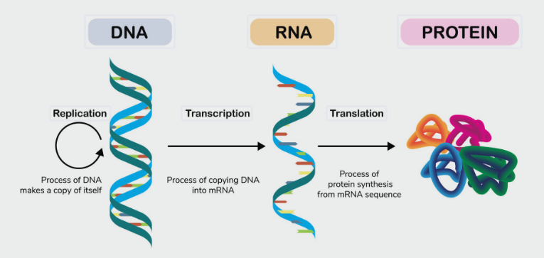
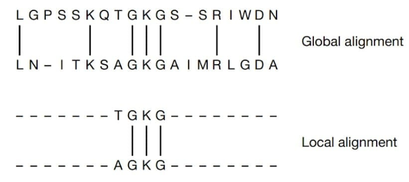
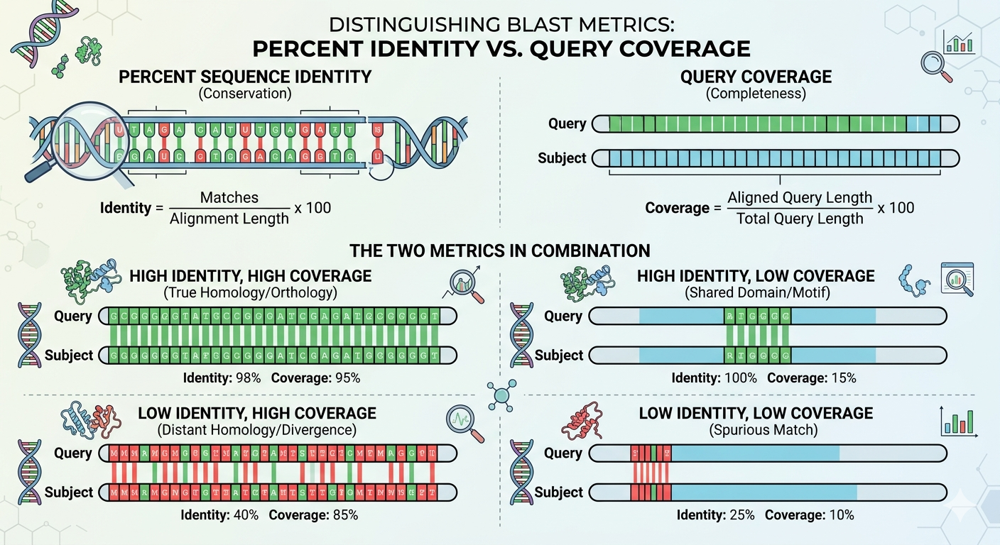

You cannot teach a man anything; you can only help him find it within himself.
—To The Beginners
Part I: Foundation – The Essential Infrastructure#
Before we can interpret what a bacterial genome tells us about probiotic potential, we must first build a solid foundation. This part ensures that every student, regardless of their background, can confidently navigate the raw data and the computational environment. We cover the biological structures that shape bacterial genomes, the key concepts for comparing them, the most important concept in bioinformatics, the sequencing technologies that produce the data, and the practical steps to set up a reproducible analysis workspace.
Chapter 1: Essentials of Bacterial Genomics#
A bacterial genome is more than a string of A, T, C, and G. It is a compact, information-rich molecule that reflects the organism’s lifestyle, metabolic repertoire, and evolutionary history. Understanding its physical and functional organization is the first step toward asking the right questions from the data.
1.1 Genome and Central Dogma#
1.1.1 The Genome: The Biological Library#
A genome is the complete set of genetic instructions encoded in the DNA (or, for some viruses, RNA) of an organism. DNA is organized into long, thread-like structures called chromosomes. Within these, functional segments called genes provide the specific codes for individual traits and proteins. The term “genome” was coined in 1920 by Hans Winkler, blending “gene” and “chromosome,” and has since expanded to encompass all of an organism’s hereditary information. In the simplest sense, the genome is the master blueprint that directs cellular functions, defines metabolic capabilities, and orchestrates the organism’s response to its environment. The nuclear genome includes protein-coding genes and non-coding genes, other functional regions of the genome such as regulatory sequences (non-coding DNA), and often a substantial fraction of junk DNA with no evident function. The study of the genome is called genomics.
Genome - by wikipedia The first genome to be sequenced was that of the virus φX174 in 1977; the first genome sequence of a prokaryote (Haemophilus influenzae) was published in 1995;the yeast (Saccharomyces cerevisiae) genome was the first eukaryotic genome to be sequenced in 1996. The Human Genome Project was started in October 1990, and the first draft sequences of the human genome were reported in February 2001.
The human genome, for instance, contains approximately 3 billion base pairs of DNA packaged into 23 pairs of chromosomes. While, bacterial genomes range in size from approximately 112 kb to 13 Mb, containing roughly 100 to 10,000 genes.
Note
In the scientific literature, the term ‘genome’ usually refers to the large chromosomal DNA molecules in bacteria
1.1.2. The Central Dogma: The Flow of Genetic Information#
The Central Dogma is a framework first proposed by Francis Crick in 1957. It describes the standard “workflow” of biological systems, illustrating how information moves from storage (DNA) to intermediate (RNA) to action (Protein).
The process follows three fundamental stages:
I. Replication (DNA \(\rightarrow\) DNA)#
To ensure genetic continuity, a cell must duplicate its entire genome before division. Enzymes like DNA Polymerase unwind the double helix and synthesize two new identical strands.
II. Transcription (DNA \(\rightarrow\) RNA)#
Information stored in a gene is “rewritten” into a mobile format. The cell creates a single-stranded molecule called messenger RNA (mRNA).
Location: In eukaryotes, this occurs within the nucleus.
Mechanism: RNA Polymerase reads the DNA template strand and catalyzes the assembly of complementary RNA nucleotides.
III. Translation (RNA \(\rightarrow\) Protein)#
The mRNA sequence is “read” by the ribosome to build a protein.
The Code: The ribosome reads mRNA in groups of three nucleotides called codons.
The Result: Each codon specifies a particular amino acid. These amino acids are linked together to form a polypeptide chain, which then folds into a functional 3D protein.
Summary of Information Flow

Process |
Template |
Product |
Primary Engine |
|---|---|---|---|
Replication |
DNA |
DNA |
DNA Polymerase |
Transcription |
DNA |
mRNA |
RNA Polymerase |
Translation |
mRNA |
Protein |
Ribosome |
1.1.3 Beyond the Gene: Regulation and Molecular Modification#
A gene sequence is the baseline for heredity, but the ultimate function of that gene product is shaped by multiple additional layers:
Transcriptional regulation
Promoters, repressors, activators, and sigma factors control whether and how much mRNA is produced.
Post-transcriptional modification
In bacteria, mRNA stability, riboswitches, and small regulatory RNAs (sRNAs) influence mRNA half-life and translational efficiency.
Translational control
Ribosome binding site strength, codon usage, and attenuation mechanisms determine how efficiently an mRNA is translated.
Post-translational modification
Proteins can be modified after translation by phosphorylation, acetylation, methylation, proteolytic cleavage, and other chemical changes, which alter activity, stability, or interactions.
Note
These regulatory and modification processes mean that the same gene can have different functional outcomes depending on cellular context, growth conditions, and environmental signals. For probiotic evaluation, understanding these layers is essential because beneficial traits often depend on gene regulation and protein activation, not just gene presence.
1.2 Structural Features of Bacterial Genomes#
Chromosome topology and size
Most bacteria carry a single circular chromosome, typically ranging from 0.5 Mbp (e.g., Mycoplasma genitalium) to over 10 Mbp (e.g., Sorangium cellulosum). However, linear chromosomes and multipartite genomes exist (e.g., Borrelia burgdorferi, Vibrio cholerae). Knowing the expected genome size of your target species helps you judge assembly completeness early on.
Gene density and operons
Bacterial genomes are gene-dense: coding sequences (CDSs) often occupy 85–90% of the chromosome. Genes with related functions are frequently organized into operons—groups of contiguous genes transcribed as a single polycistronic mRNA. For example, the lac operon of E. coli coordinates lactose utilization. Recognizing operon architecture aids in functional annotation because the physical clustering of genes can hint at shared pathways.
Plasmids: the accessory genetic repertoire
Plasmids are extrachromosomal, self-replicating DNA molecules that range from a few kilobases to several hundred kilobases. They often carry genes that confer adaptive advantages under specific conditions:
Antibiotic resistance genes (e.g., β-lactamases)
Virulence factors (e.g., toxins, adhesion factors)
Metabolic specializations (e.g., utilization of unusual carbon sources) When assessing a candidate probiotic, the presence and gene content of plasmids are critical. A plasmid might encode a desirable bacteriocin, or it might harbour a transferable antibiotic resistance gene—a major safety concern.
1.3 Sequence Alignment and Genome Assembly#
Before a genome can be annotated, the millions of short (or long) fragments produced by the sequencer must be stitched together into contiguous sequences that represent the original chromosome(s) and plasmids. This process—genome assembly—relies fundamentally on the concept of sequence alignment.
1.3.1 Sequence Alignment: The Core Operation#
Sequence alignment is the act of arranging two or more DNA (or protein) sequences to identify regions of similarity. The output is an alignment that may include matches, mismatches, and gaps (insertions/deletions). Alignments are central to almost every computational step: read mapping, overlap detection during assembly, multiple sequence alignment for phylogenetics, and database searches for annotation.
1.3.1.1 Pairwise Alignment: Global vs. Local#
When comparing two sequences, two classical algorithmic approaches are used:
Global alignment forces the alignment to span the entire length of both sequences, end‑to‑end. The Needleman–Wunsch algorithm is the classic dynamic programming method. It is appropriate when the sequences are expected to be similar over their full lengths (e.g., allelic variants of the same gene).
Local alignment identifies the highest‑scoring subsequence(s) shared between two sequences, ignoring poorly matching ends. The Smith–Waterman algorithm performs local alignment. This is the basis for BLAST (Basic Local Alignment Search Tool), which searches a query sequence against a database to find regions of similarity.

In the context of genome assembly, we are primarily concerned with local alignments—finding overlaps between reads or between a read and a reference contig.
1.3.1.2 Read Alignment (Mapping)#
When a closely related reference genome is already available, new sequencing reads can be mapped to that reference. This is a rapid way to identify differences (SNPs, small indels, structural variants) and to estimate the coverage depth across the genome. Popular short‑read mappers like BWA-MEM and Bowtie2 use an index of the reference (often a Burrows–Wheeler Transform or FM‑index) to efficiently place millions of reads.
Mapping is not always part of a de novo assembly pipeline, but it is extremely useful for:
Evaluating assembly quality by mapping the original reads back onto the assembled contigs to check for consistency and coverage.
Performing read‑based error correction before assembly (e.g.,
Lighter,BayesHammerin SPAdes).Detecting contamination by mapping reads against a panel of potential contaminant genomes.
1.3.1.3 Alignment Scores and Significance#
Every alignment is evaluated by a scoring system. Match and mismatch scores are assigned (e.g., +1 for a match, −1 for a mismatch), and gap penalties (cost of opening and extending a gap) discourage the introduction of excessive indels. The sum of these scores determines the alignment quality. For BLAST, the Expect value (E‑value) estimates the number of alignments with a given score that would be expected by chance; a low E‑value indicates a biologically meaningful match.
1.3.2 Introduction to BLAST Metrics: Identity and Coverage#
In computational biology and genomic analysis, local alignment algorithms—most notably the Basic Local Alignment Search Tool (BLAST)—are fundamental for inferring the homology, function, and evolutionary history of unknown sequences. When querying a nucleotide or amino acid sequence against a reference database, BLAST evaluates local alignments based on statistical significance (\(E\)-value) and raw alignment scores. However, establishing the biological relevance of an alignment requires a dual evaluation of its sequence-level conservation and structural completeness. This is achieved through two primary metrics: Percent Sequence Identity and Query Coverage.
Percent Sequence Identity
Percent sequence identity (\(I\)) quantifies the proportion of exact residue matches within the aligned regions. It serves as a direct proxy for evolutionary distance and sequence conservation, mathematically expressed as:
Where \(M\) is the number of identical character matches and \(L_{\text{alignment}}\) is the total length of the aligned region, including any internal gaps introduced by the algorithm to optimize the alignment score. A high percent identity implies that the two sequences have deviated minimally from their most recent common ancestor, suggesting conserved biochemical properties and tertiary structures.
Query Coverage
Conversely, query coverage (\(C\)) measures the global footprint of the alignment relative to the input sequence, reflecting the structural or domain-level completeness of the match. It is calculated as:
Where \(L_{\text{included}}\) represents the total number of residues of the query sequence captured within the alignment boundaries, and \(L_{\text{query}}\) is the absolute length of the input sequence. High query coverage ensures that the alignment spans the majority of the gene or protein, implying that the global multi-domain architecture has been preserved.
The Necessity of Dual Thresholding#
Relying on either metric in isolation introduces significant analytical bias. For instance, a high percent identity over a short, localized segment (high identity, low coverage) often represents a single shared functional motif or low-complexity region rather than true orthology. Conversely, an alignment spanning the entire length of a sequence but possessing low identity (low identity, high coverage) may indicate distant divergence over deep evolutionary time or non-homologous structural convergence.
To minimize false-positive annotations, genomic workflows routinely implement stringent, simultaneous thresholding of both percent identity and query coverage. This combinatorial approach ensures high-confidence ortholog identification, which is critical when delineating mobile genetic elements, such as distinguishing plasmid-borne genes from chromosomal loci.
Alignment Topology Reference Matrix#
To systematically validate BLAST outputs, alignments can be categorized into four distinct biological quadrants based on their metric thresholds:
Scenario |
Percent Identity |
Query Coverage |
Biological Interpretation |
|---|---|---|---|
Quadrant I |
High |
High |
True Orthology / High-Confidence Hit: The sequences are highly conserved across their entire length. Strong evidence for shared function and recent common ancestry. |
Quadrant II |
High |
Low |
Shared Local Domain / Motif: The sequences share a highly conserved functional domain (e.g., a catalytic site), but global structures differ. Not full orthologs. |
Quadrant III |
Low |
High |
Distant Homology / Structural Divergence: The sequences share a similar structural backbone or length but have accumulated extensive mutations. |
Quadrant IV |
Low |
Low |
Spurious Match / Local Noise: Weak, short alignments that are typically statistical artifacts or low-complexity sequence repeats. |
NanoBanana generated summary:

Note
although quite informative, AI generated figures still have some visible errors. Just generally consider:
the green color in both query and subjects refers to identical character matches.
The red color in both query and subjects refers to character mismatches.
1.3.2 De Novo Genome Assembly: Reconstructing the Unknown#
When no suitable reference exists, or when we want an unbiased representation of the genome (including large insertions, rearrangements, and plasmids), we must perform de novo assembly. The goal is to reconstruct the original genome sequence(s) from the set of reads alone. The strategy differs fundamentally for short reads and long reads.
In the era of high-throughput sequencing, reconstructing a complete and accurate genome is subject to solving a massive, multi-million-piece jigsaw puzzle. Because sequencing machines cannot read an entire chromosome from end to end, they generate millions of short or long fragments (“reads”) that must be computationally stitched back together into continuous sequences called contigs, which are then ordered into scaffolds. The algorithms, in general, can be described as “Construct genome sequence from overlaps between reads”.
Details of the algorithm skipped.
Note
The fidelity, completeness, and structural accuracy of this reconstructed sequence define its genome quality. High genome quality is critical for downstream applications, such as identifying disease-causing mutations, studying evolutionary biology, and functional genomics.
1.3.3 Evaluating Assembly Quality#
An assembly is a hypothesis about the true genome. Before proceeding to annotation, we must assess its correctness and completeness using complementary metrics.
Genome quality is not determined by a single number. Instead, it is evaluated using a combination of continuity, completeness, and accuracy metrics.
Contiguity metrics:
N50: The length of the shortest contig at which half the total assembly length is covered (after sorting contigs from longest to shortest). Higher N50 indicates a more contiguous assembly. A single‑contig assembly has N50 equal to the genome length.
Number of contigs and longest contig: For a typical bacterial genome, a complete assembly yields one circular contig per chromosome/plasmid and a few small pieces for repetitive regions if not fully resolved.
Completeness:
BUSCO (Benchmarking Universal Single‑Copy Orthologs): Searches the assembly for a lineage‑specific set of conserved single‑copy genes. Reports the percentages of complete (single‑copy or duplicated), fragmented, and missing genes. A near‑complete assembly should show >95% complete and very few missing.
CheckM: Uses lineage‑specific marker genes to estimate completeness and contamination (presence of multiple copies of single‑copy markers suggests mixed strains).
Correctness:
QUAST (Quality Assessment Tool for Genome Assemblies): Summarises contiguity, calculates GC content deviations, aligns contigs to a reference (if provided) to report genome fraction, misassemblies, and indels. It is the standard tool for evaluating assemblies.
Mapping rate: The percentage of reads that map back to the assembled genome. If coverage is uniform and >98% of reads map concordantly, the assembly is likely accurate. Sudden drops in coverage can indicate collapsed repeats or missing regions.
Circularisation check: For a complete assembly, the terminal overlap of a contig should contain identical sequences. Tools like
circlatoror manual inspection of the assembly graph can verify whether a contig represents a true circular molecule.
Note
The basic of the comparative genomic is the alignment. Try the example shared in the previous tutorial
1.4 Gene Annotation: Deciphering the Blueprint#
Once a genome is assembled into contigs or a complete chromosome, the next fundamental step is gene annotation—the process of identifying the locations and functions of genes on the DNA sequence. Annotation transforms a string of nucleotides into a biologically interpretable parts list. Without accurate annotation, all downstream analyses of probiotic potential remain blind.
Annotation is conventionally divided into two linked phases:
Structural Annotation: Finding the Genes#
Structural annotation locates genomic elements: protein-coding sequences (CDSs), ribosomal RNAs (rRNAs), transfer RNAs (tRNAs), and other non-coding RNAs. In prokaryotes, the gold-standard tool for predicting CDSs is Prodigal (Prokaryotic Dynamic Programming Genefinding Algorithm). Prodigal builds a statistical model of the genome’s nucleotide composition (codon usage, GC bias, hexamer frequencies) and uses it to identify open reading frames (ORFs) while also recognizing ribosome binding sites (Shine–Dalgarno sequences). This dual signal dramatically increases accuracy compared to simple ORF scanning.
Key outputs of structural annotation:
A set of predicted gene coordinates (start and stop positions on each contig).
Nucleotide and translated protein sequences for each CDS.
Functional Annotation: Assigning Biological Meaning#
Functional annotation answers the question: “What does each gene do?” It almost always relies on transferring information from experimentally characterised sequences or conserved domains.
The most common strategies are:
Homology-based transfer A predicted protein sequence is compared against large, curated databases using BLAST or Diamond. If a match is statistically significant and shares high sequence identity (e.g., > 40% across > 80% of the length), the function of the database hit is tentatively assigned to the query gene. Widely used databases include:
NR (NCBI non‑redundant protein) – comprehensive but contains many uncurated entries; useful for broad overviews.
UniProtKB/Swiss‑Prot – manually curated, high‑quality subset; ideal when available.
COG (Clusters of Orthologous Groups) and eggNOG – groups of orthologous proteins; each group is assigned a functional category (e.g., “G: Carbohydrate transport and metabolism”). This reduces the impact of misannotation because the assignment is based on group membership, not a single best hit.
Conserved domain and protein family searches Many proteins are defined by the presence of one or more conserved functional domains, even if their overall sequence varies. Searching against domain databases identifies these signatures with high sensitivity:
Pfam – hidden Markov model (HMM) profiles of protein families.
InterPro – integrates multiple domain and family databases (Pfam, PROSITE, TIGRFAMs, etc.) to provide a comprehensive classification.
KEGG Orthology (KO) – assigns identifiers that link proteins directly to metabolic pathway maps.
Pathway mapping Once genes are assigned KO numbers, they can be mapped onto KEGG pathway diagrams to reconstruct the organism’s metabolic network. This is how we will assess the completeness of pathways such as short‑chain fatty acid synthesis or vitamin biosynthesis in later chapters.
Annotation Pipelines: From Prediction to Product#
Manually running Prodigal, BLAST, HMMER, and InterProScan for every gene is time‑consuming and error‑prone. Instead, we use integrated pipelines. The workhorse in this book is Prokka, introduced in detail in Chapter 4. Prokka orchestrates:
Prodigal for CDS prediction.
Aragorn for tRNA/rRNA detection.
BLAST+ and HMMER against curated bacterial protein databases to assign gene names and functions.
Prokka produces ready‑to‑use output in multiple formats (GenBank, GFF, protein FASTA). This standardised output becomes the input for virtually all subsequent tools: antiSMASH, eggNOG‑mapper, and virulence databases.
The Caveat of Computational Annotation#
Every functional annotation derived solely from sequence similarity is a prediction, not a proven fact. Errors propagate: if a database entry is misannotated, all sequences that match it will inherit that error. Therefore, we must treat annotations as hypotheses. When a gene is critical for probiotic potential (e.g., a bacteriocin), its function should ideally be verified by biochemical assays. In the absence of laboratory validation, we seek convergent evidence: agreement between multiple annotation methods, conserved domain architecture, and genomic context (e.g., location within a known biosynthetic gene cluster) increases our confidence.
With a clear understanding of what gene annotation entails, we are now ready to assemble the toolkit that will take us from raw reads to an annotated genome.
1.5 Accessing and Leveraging Publicly Available Assembled Genomes#
Comparative genomics, pangenome analysis, and phylogenetic placement all require a set of reference genomes. Public repositories hold hundreds of thousands of bacterial genome assemblies, but their quality and completeness vary dramatically. This chapter teaches you how to find, download, and critically assess assembled genomes from public databases so that you can build a robust reference set for your probiotic evaluation.
1.5.1 Why Not Just Use All Available Genomes?#
Downloading every assembly labelled with your species of interest is tempting but dangerous. Low‑quality drafts, contaminated assemblies, and misclassified genomes will distort your downstream analyses. A recent study estimated that up to 10% of bacterial genomes in GenBank may be contaminated or misidentified. Therefore, selecting and filtering public genomes is as important as sequencing your own isolate.
1.5.2 Primary Repositories for Assembled Genomes#
Database |
Scope |
Typical assembly content |
Access method |
|---|---|---|---|
NCBI Assembly |
All domains of life; largest collection |
FASTA, GenBank, GFF, metadata |
Web, |
ENA (European Nucleotide Archive) |
Same raw data as NCBI, but different assembly bundles |
Flat files, sometimes ENA‑specific accessions |
Web, FTP, API |
DDBJ |
Japanese partner of INSDC; identical submissions |
Same as NCBI/ENA |
Web, FTP |
GTDB (Genome Taxonomy Database) |
Phylogenetically consistent classification of bacteria and archaea |
Repackaged assemblies with uniform quality controls |
Web, API (gtdb‑tk) |
IMG/MER (Integrated Microbial Genomes) |
Curated by JGI; extensive comparative tools |
Genomes with IMG‑specific annotations |
Web, API |
BV‑BRC (formerly PATRIC) |
Comprehensive bacterial/viral resource, antimicrobial resistance data |
Assembled genomes with specialty annotations |
Web, CLI, FTP |
For most probiotic projects, NCBI Assembly is the starting point because of its comprehensive metadata and command‑line tools. GTDB is indispensable when you need a phylogenetically consistent reference set, particularly for identifying misclassified genomes.
1.5.3 Metadata Tracking and Versioning#
Public assemblies are updated: a genome that was “complete” last year might be superseded by a better assembly this year. Always record the exact accession version (e.g., GCF_000001405.40) and the date of download. NCBI’s dataset_catalog.json contains the version and assembly statistics for each genome. If you publish a comparative analysis, include a table listing all reference genomes with their accessions, versions, and quality metrics.
Case Study 1: Genome downloading#
Lactiplantibacillus plantarum is a typical recognized probiotic found very versatile in coloning different niches (such as plants, fermented foods, animal guts). In this tutorial, we will use a series of case study to understand the genomic information given from this traditional probiotics, and our Intestinimonas butyriciproducens.
Note
Try to download one genome of “Lactiplantibacillus plantarum WCFS1” from NCBI (https://www.ncbi.nlm.nih.gov/datasets/genome/).
Record the genome quality.
Download genome fasta file, gff, protein file.
Discuss why we choose this genome.
Similarly, search “Intestinimonas butyriciproducens”
Which strain genome would you choose? Why?
Record the genome quality.
Download genome fasta file, gff, protein file.
Write methodology to describe why you choose these genome.